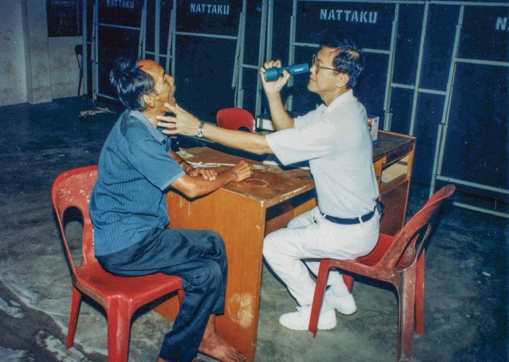
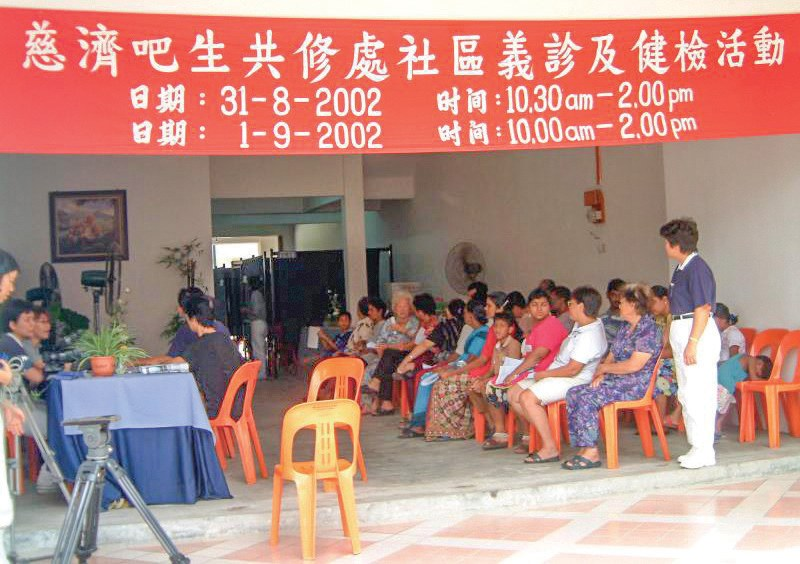
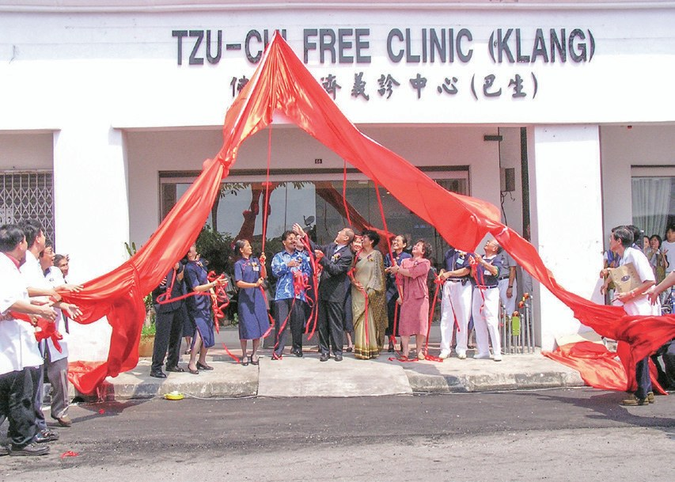
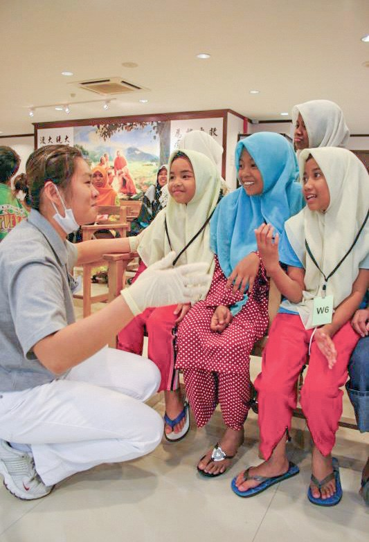
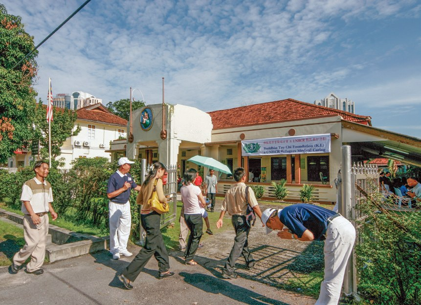
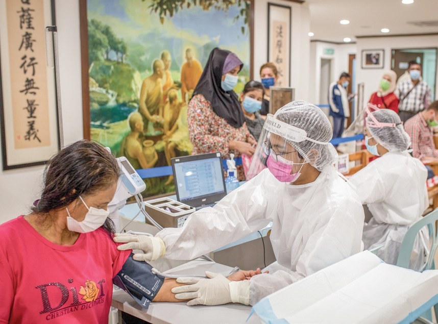
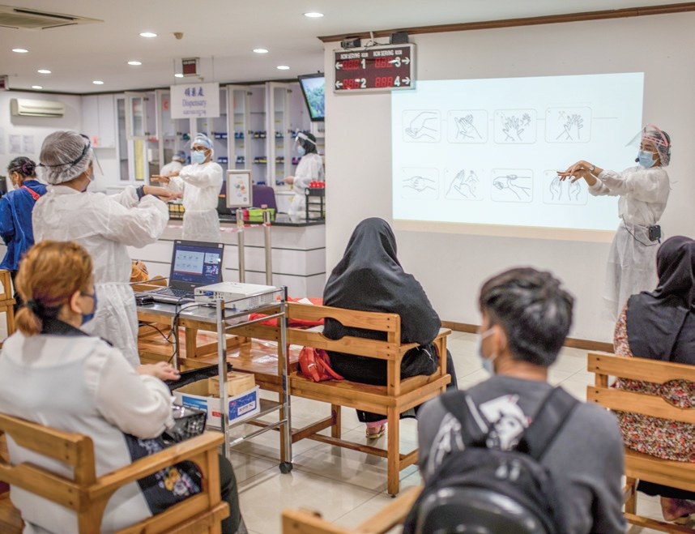
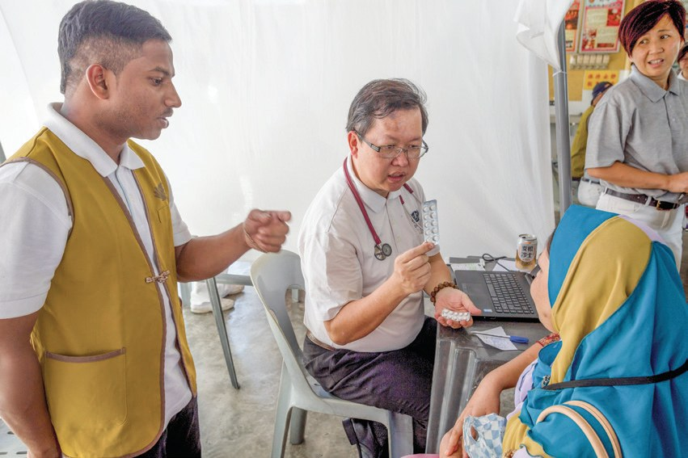

義診堡壘
救拔貧病
小病拖成大病，怎樣才能早一點看醫生？

先別急著下結論，讀完再說說你的想法～
這一篇講雪隆的兩間義診中心：巴生和吉隆坡。志工捐出店面、挨家挨戶敲門、開車接老人來看診。
後來，義診中心成了難民看病的地方；疫情來了，醫師還把藥寄到病人家裡。
下面是原書的節錄，紅色底線是我們替你標出的轉折點。
讀之前：你覺得窮人生病了，最大的難處是什麼？
小病拖成大病
公立醫院排很久，窮人生病怎麼辦？閱讀引導
許多貧困的病患都是小病拖成大病，痛到無法忍受才到醫院就診，往往病況危急無法及時獲得醫療救治。

才去醫院……
因病而貧，因貧而病，貧病相生
上人說・p.359
為照顧戶提供免費西醫跟中醫看診，從此每三個月定期舉辦發放日伴隨義診的基礎照護。
不過定期義診的成效畢竟有限，也無法及時提供醫療援助，因此吉隆坡慈濟人便有了成立義診中心的念頭。
要有一間義診中心！
捐出兩間店面
一對夫婦捐了會所，又再捐出店面。閱讀引導
居民生活經濟困難，加上沒有交通工具代步等因素，即使生病常常只能一拖再拖。

志工林國華和陳銀娘夫婦不忍醫師跟病患在炎熱天氣下看診及等待。
他們在捐出巴生共修處會所後，又毅然決定再捐出兩間店面，作為義診中心及靜思書軒籌設地點

又再捐兩間店！
巴生志工前往附近低收入的政府組屋挨家挨戶去敲門，派宣傳單，讓民眾能善用義診中心
猜一猜閱讀引導
2003年啟用的巴生義診中心，是慈濟在海外的第幾間義診中心？

有的則因為擔心要收費而不敢求診
志工主動前往鄰近的敬老院、殘智障院邀約，甚至兼任司機，把老人或殘障者載過來看診。

志工開車去接！
首都的暗角
街友病了，從沒想過要看醫生。閱讀引導
慈濟在吉隆坡市區進行街頭發放，發現很多街友病了卻未曾想過看診治療
吉隆坡義診中心成立後，提供基本的醫療服務，免除了病患和志工的長途奔波。
根據2010年的調查，馬來西亞的非營利慈善機構超過一千兩百個，慈濟義診中心是唯一長期提供免費牙科服務的機構。
只有這裡長期免費看牙！
醫師注意到有難民因肌肉疼痛反覆就醫，但經檢查卻無異常。多次詢問生活情況後，發現是心理問題而導致身體不適
原來是心裡苦。
- 18,637人次巴生義診中心援助病患p.362
- 219,278人次吉隆坡義診中心援助病患p.365
孤兒院和難民
原住民孤兒、沒有法律保障的難民，義診中心也照顧。閱讀引導
家長缺乏衛教知識，家中孩子多，大部分沒有上學，居民普遍患有皮膚病。

「不論種族、宗教為何，人生的真正意義就是要對別人獻出關懷與愛心。」
莎芭夏醫師認為・p.367「……反而讓我反思，我們不應該只是活在自己的世界，應該走出舒適圈，盡力幫助別人。」
大學生阿杜爾阿錫表達・p.367
是學會走出去。
難民無法擁有合法的工作，生病時面臨無法負擔的醫療費用，成為不可避免的問題。

2011年1月2日起，義診中心為難民開設更多門診時段，每週從原先的三日增加到六天，以服務更多病患。

加到六天。
「我深感榮幸，看到慈濟不僅能夠提供一個很好的醫療環境，還涵蓋了照顧難民，社會、心理、福利，以及醫療服務的各種問題。」
聯合國難民署代表湯瑪士讚歎・p.369把藥寄到家
封城了，病人不能來，醫師怎麼辦？閱讀引導
「大家對病毒的傳播所知有限，更對防疫SOP毫無經驗。」
符之良醫師不諱言・p.370
義診中心醫護團隊沒有因為病人無法前來而放鬆，反而擔心難民病患的病況及用藥情形。
醫師透過視訊問診，將藥物郵寄到病患家中。
藥就寄過去！
並為物理治療的病人錄製復健運動影片，透過通訊軟體傳送影片，病患也可以回傳自己的復健情況

難民因為沒能力承擔檢測費用，無法向雇主證明自己未感染新冠肺炎，而無法尋得工作機會
就沒辦法上班。
- 1,153次PCR檢測p.372
- 1,975劑新冠疫苗p.372
私人醫院像打工
一位醫師從一週一天，到決定全職留下。閱讀引導
符之良在臺灣念書時認識慈濟，加入慈青社，跟著師兄師姊去訪視、做環保。
符之良從答應一週支援一天，漸漸地變成兩天，再到三天，到後來一週四天；在私人醫院的工作反而像是打工。
最後全職留下！

「我以前心量好小，還想著到私人醫院工作，賺更多的錢，但是我想若能把義診中心規劃好，就能讓更多人得到幫助，所以我決定留下來投入更多。」
符之良說・p.373「……難民看到我們都很歡喜，也很感動；在新冠疫情之下，還不忘記他們的存在。」
符之良說・p.374所以我說醫療團隊的車隊，是載著無限、無限的希望到山上。
上人說・p.374- 31,071人次醫護人員投入p.375
- 6,742人次醫療志工投入p.375
- 237,915人次援助病患p.376
停一停：誰讓你記住了？閱讀引導
選一位你印象最深的人。沒有標準答案。
有人捐出店面，有人兼任司機，有人放下私人醫院。哪一位讓你最有感覺？

一起回頭看看吧～
回望
依本章原文整理，每一條都標了原書頁碼。閱讀引導
背後原因
為什麼要辦義診中心

小川已經有政府醫院了，為什麼還要義診中心？
- 公立醫院人手不足
不論是看診、手術的排程都相當漫長。p.359
- 貧病相生
許多貧困的病患都是小病拖成大病。p.359
- 義診中心
定期義診的成效有限，便有了成立義診中心的念頭。p.360
後續發展
兩間義診中心

小禾從帳篷義診到全職醫師，經過了多少年？
- 1997
發放日伴隨義診，每三個月一次。p.359
- 2003.8.24
巴生義診中心啟用。p.361
- 2007.12.2
吉隆坡義診中心啟用。p.363
- 2011.1.2
難民門診每週增加到六天。p.368
- 2015.5
符之良決定留在義診中心服務。p.373
- 2021.9
成為定點疫苗接種站。p.372
疫情前後
義診中心怎樣應變
小川病人不能來，醫師怎樣繼續看病？
- 病人到中心看診醫師透過視訊問診p.371
- 到中心領藥藥物郵寄到病患家中p.371
- 現場做物理治療錄製復健運動影片p.371
- 在中心看病志工打包物資逐戶配送p.371–372
以上只整理本章寫到的事；書裡沒寫到的，我們不替它下結論。
回頭看讀前的選擇閱讀引導
有的家庭擔心要收費而不敢求診（p.362）；很多街友病了卻未曾想過看診（p.363）；志工兼任司機，把老人載過來（p.362）。錢、資訊、交通，義診中心一樣一樣解決。
是病患教育了自己？
只有你自己看得到喔！
準備好了就一起出發～